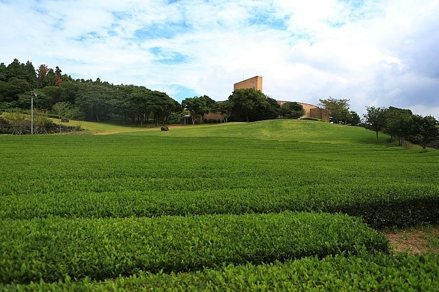
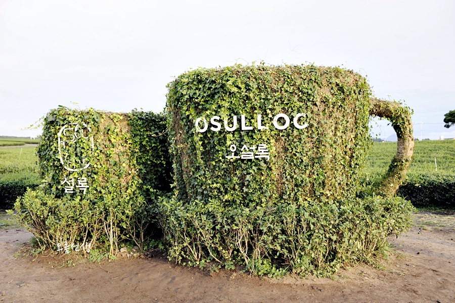

오설록티뮤지엄
#제주도 #오설록 #뮤지엄 #녹차
insta
map
매일 09:00 - 19:00 연중무휴
064-794-5312
자연을 생각하는 제주 오설록 녹차아이스크림!
제주 오설록 서광 차밭과 맞닿아 있는 오설록 티뮤지엄은 아모레퍼시픽이 차와 한국 전통차 문화를 소개하고, 널리 보급하고자 2001년 9월에 개관한 국내 최초의 차 박물관입니다.
제주 오설록 서광 차밭과 맞닿아 있는 오설록 티뮤지엄은 아모레퍼시픽이 차와 한국 전통차 문화를 소개하고, 널리 보급하고자 2001년 9월에 개관한 국내 최초의 차 박물관입니다.
| 녹차 아이스크림 | 5000원 | |
| 녹차 롤 케이크(piece) | 5500원 | |
| 세트A(녹차오프레도,그린티롤케익,녹차아이스크림) | 17300원 | |
| 세트A(한라봉오프레도,그린티롤케익,녹차아이스크림) | 17600원 |
제주 서귀포시 안덕면 신화역사로 15 오설록